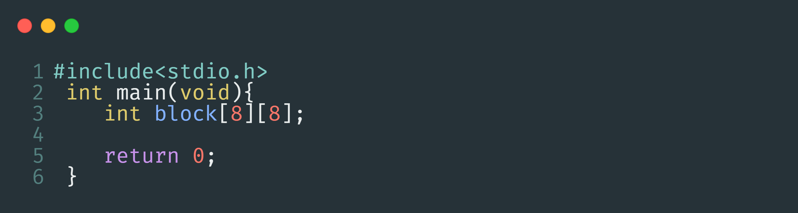
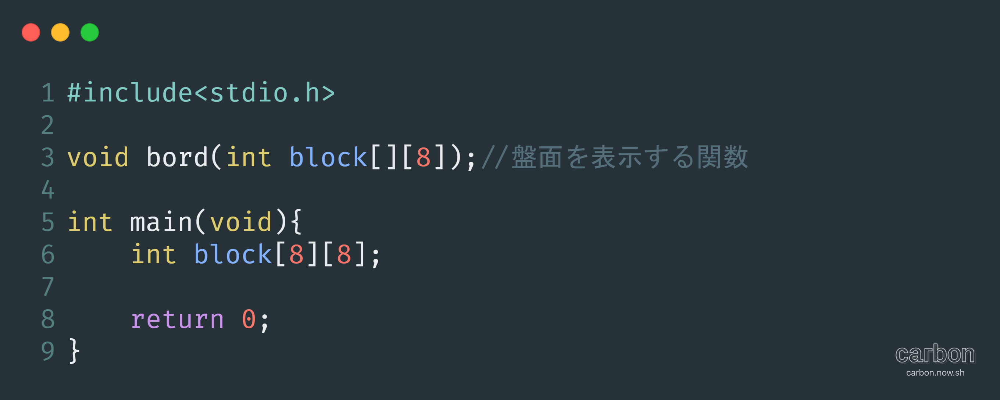
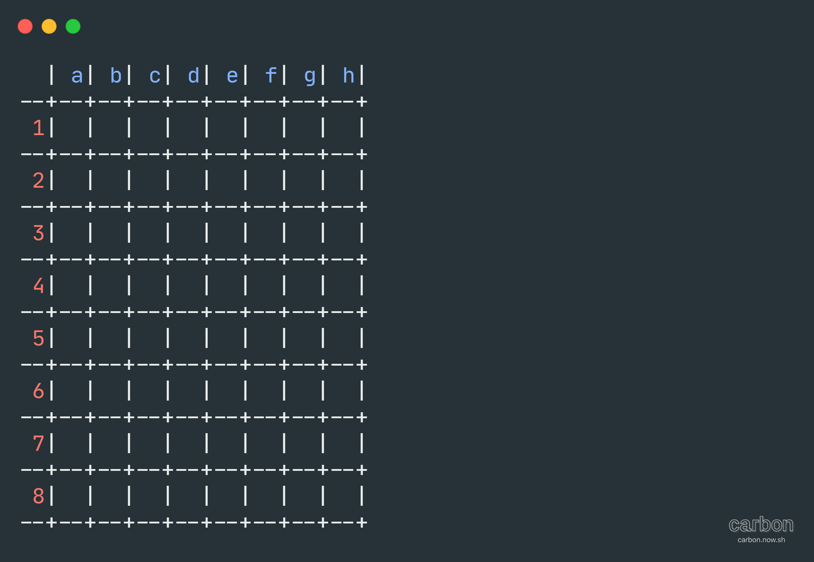
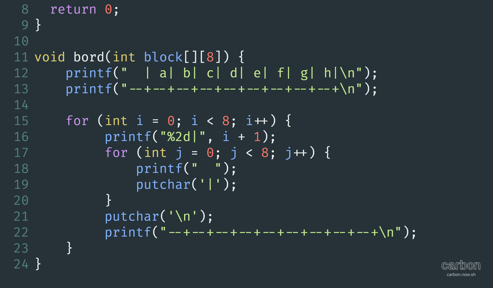
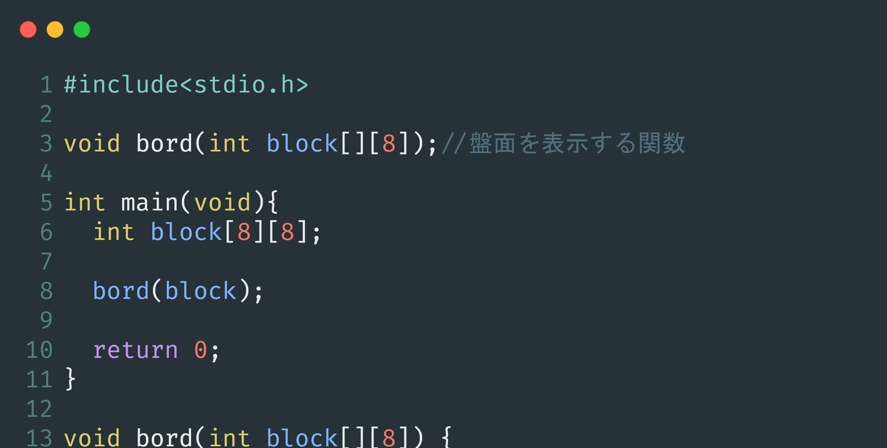
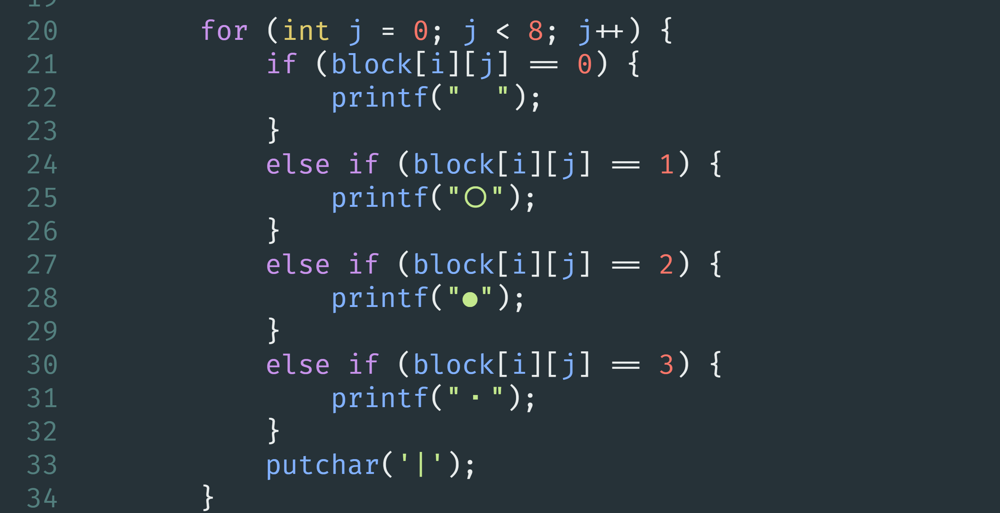
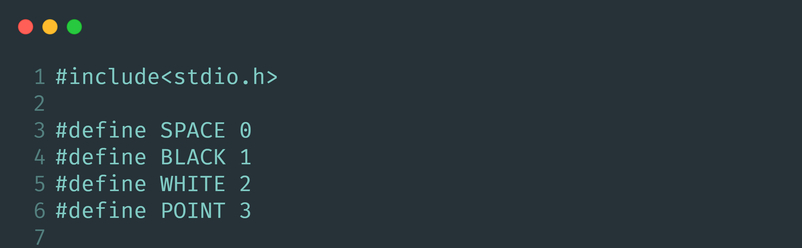
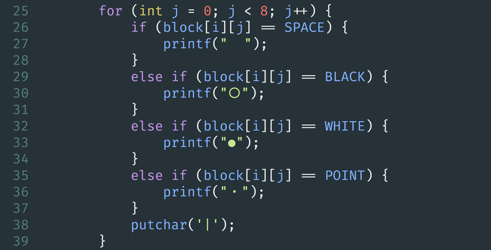
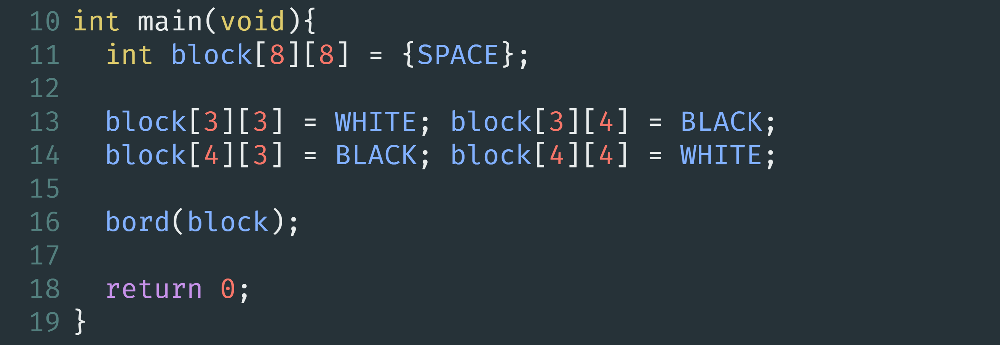

C言語でオセロを作る
ー Part.1 ー
到達目標の確認から、盤面を表示させる関数 "bord関数" の完成まで。


到達目標の確認から、盤面を表示させる関数 "bord関数" の完成まで。
今回作るオセロは、1:対戦相手は隣の人 2:駒が置けるところにポインター(コレ →・）を表示 3:駒を置くときは座標指定 の3つです。ほかにも制限はありますが、その時々で説明します。
では早速ですが作っていきましょう。オセロを作るにあたって絶対欠かせないのが二次元配列です。今回も勿論これを使用します。配列名をblock 要素数を8とした二次元配列をint型で宣言します。
これで下準備は完了です。
ここからは本格的に作業に入ります。まずオセロの盤面がないことには何も始まらないので、盤面を表示する関数を作っていきましょう。関数名をbord 仮引数をblock配列にし、void型で宣言します。今回は使う関数がとても多いので全てプロトタイプ宣言とします。
ここで表示したい盤面をイメージしてみましょう。本物そっくりに作るのは無理があるのでマスごとに区切られていれば良いでしょう。ということで、今回はこのような盤面を表示します。
縦線の間は半角スペース２つできれいに表示できるようになります。
盤面がイメージ出来たらあとは書いていくだけです。盤面の上の2行はprintfでそのまま表示し、それ以降の行は2つのfor文を入れ子にし表示します。
カウンタ変数jのfor文は" |"を8回繰り返し出力し横1行を作ります。iのfor文はjで作った横1行を8回繰り返し出力し、最終的に盤面ができます
ここで一度bord関数を呼び出してみましょう。block配列を実引数にしてmain関数へ書き込みます。
実行してみましょう。ここで先ほどの盤面が表示されるとひとまず成功です。
ここまでの工程で盤面の基礎ができました。しかしこの関数は駒を置く度に使用します。つまり、カウンタ変数jのfor文のprintfの中身を変え、駒も表示できるようにしなくてはなりません。
こうすることでblock配列の中身が0ならスペース 1なら黒(※主なコンソール画面は背景が黒の場合が多く、色が反転してしまうため〇を黒として扱います) 2なら白 3なら・(※駒が置けるときのマーク)がそれぞれ表示されるようになりました。
しかし ０＝スペース １＝黒 だと直感的に理解しづらいですよね。そこでマクロ置換をし、直感的にもわかりやすくします。
 これにより、表示したい駒の名前をそのまま書くだけで表示できるようになりました。
さて盤面の表示もあと少しです。駒を表示する方法は完成したので、あとはblock配列に数値を代入し駒の初期配置をしていきましょう。
配列の中身をすべてスペースにし、中央の4つに白と黒を配置します。ここで実行してみましょう。
実行結果がこのようになると成功です。これで盤面の表示は完了です。